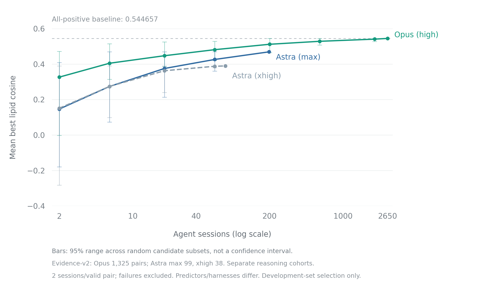

APOE4 / APOE3 hypotheses
Mock microglia · RNA + protein discovery · 618 held-out lipids
Scores rank hypothesis-predictor pairs, not causal validity. This lipid panel has been repeatedly inspected; these are exploratory results, not independent validation.
Scaling comparison and cohort results

Uniform random subsets of each observed pool; dots show the mean of the best cosine. One hypothesis uses two agent sessions. Endpoints are full-pool maxima, not evidence of certainty. Predictors and harnesses differ between models. Sonnet means and curves retain legacy zero scores for zero-norm vectors; those cosines are mathematically undefined.
| Cohort | Hypotheses | Mean cosine | Best cosine |
|---|